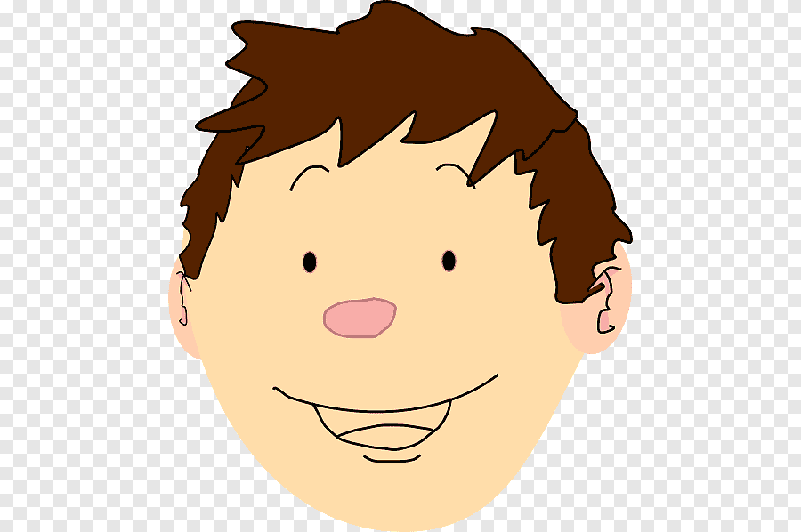

Luis Andrés Parada Barrero
DUI: 98765468-4
cargo: estudiante
Teléfono: 7665-8797
Institucion: Universidad de El Salvador
Habilidades Técnicas
- Programación
- Manejo de Office
- Coordinador
- Diagramador
Hábilidades blandas
- Trabajo en equipo
- Liderazgo
- Atencion al Detalle
- Comunicacion acertiva